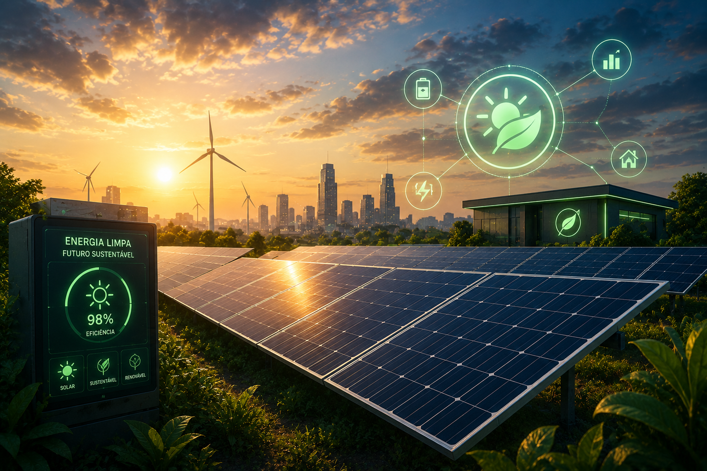

A energia solar reduz custos e contribui para a sustentabilidade.
A energia solar é uma fonte de energia renovável obtida a partir da luz do Sol. Por meio de painéis fotovoltaicos, a radiação solar é transformada em energia elétrica, que pode ser utilizada para abastecer casas, propriedades rurais, sistemas de irrigação, máquinas e equipamentos agrícolas de forma limpa e sustentável.
Captam a luz do Sol e a transformam em energia elétrica para alimentar equipamentos, bombas de irrigação e instalações rurais.
Baterias permitem armazenar energia para utilização durante a noite ou em dias com pouca incidência solar.
Convertem a energia gerada pelos painéis em eletricidade pronta para uso, garantindo maior eficiência e segurança do sistema.
Economia na conta de energia em sistemas bem dimensionados
Fonte de energia renovável e limpa
Vida útil média dos painéis solares